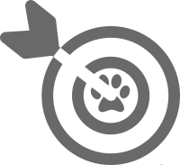
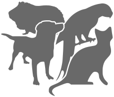
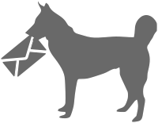

Apache Warble (incubating) is a distributed endpoint monitoring solution where
the agent is hosted on your own hardware.

Our mission
Our mission
The aim of Warble is to produce a more balanced and less binary view of services and systems, lowering the rates of false positives while also providing greater insight into possible peering issues and proactive trend analysis.

Who we are
Who we are
In alphabetical order, we are:
- Chris Lambertus
- Chris Thistlethwaite
- Daniel Gruno
- Daniel Takamori

Get in touch
Get in touch
Please use one of our mailing lists to get in touch with the Warble project:
| Users: | users@warble.apache.org | [subscribe] | [browse] |
| Developers: | dev@warble.apache.org | [subscribe] | [browse] |
Or chat to us via IRC on #warble on Freenode